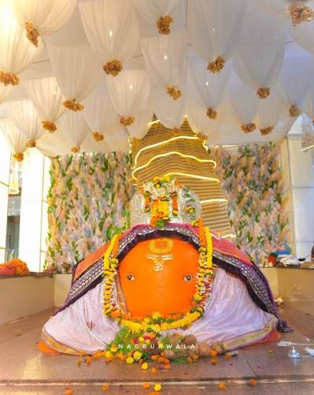

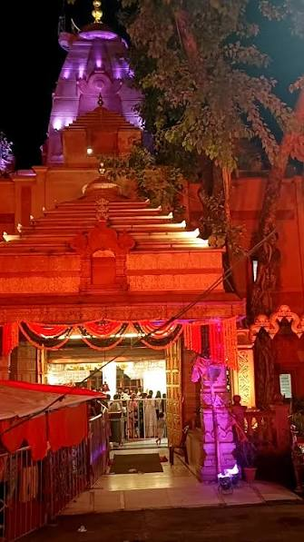
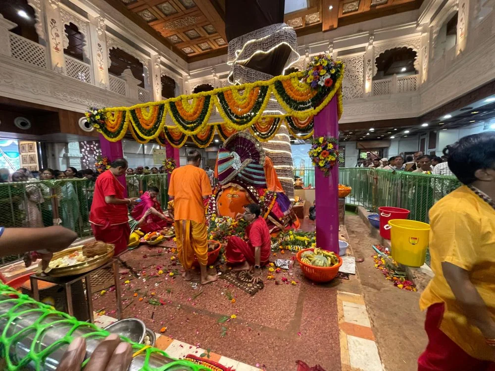
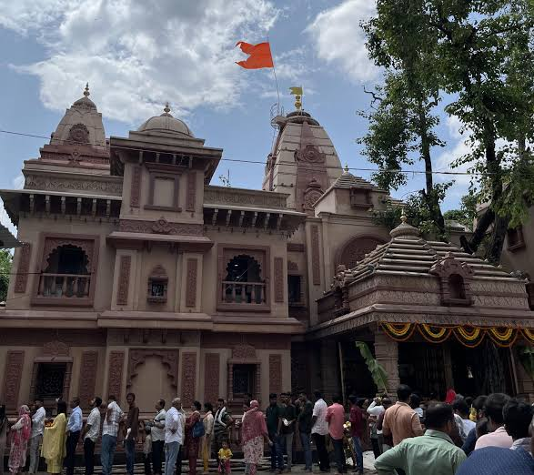
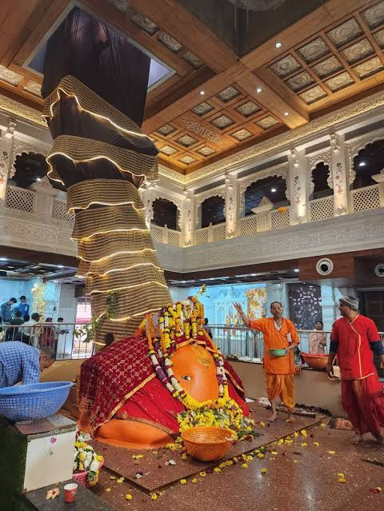
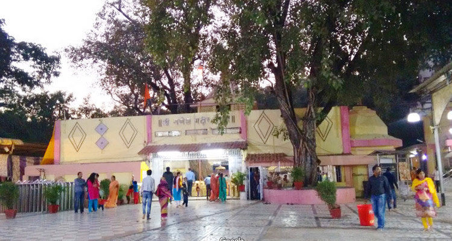
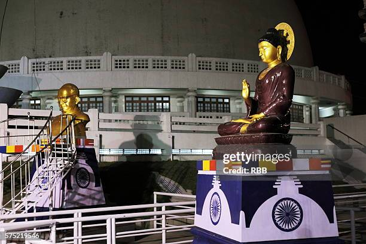
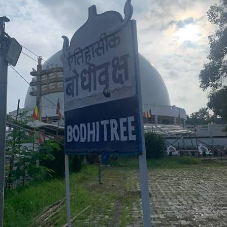
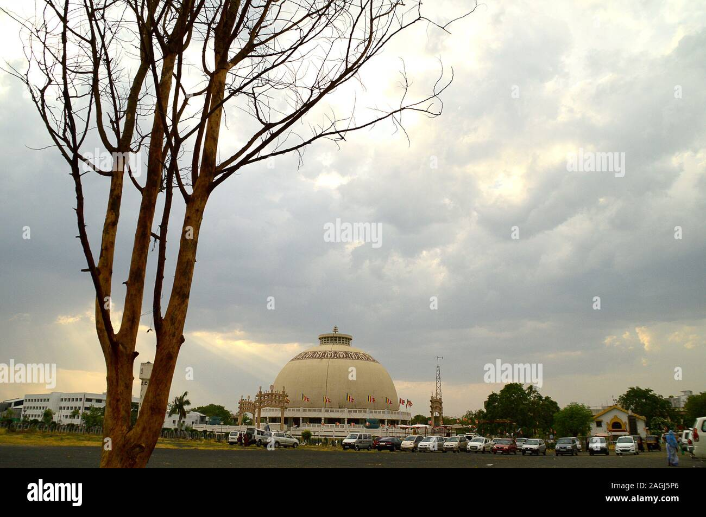
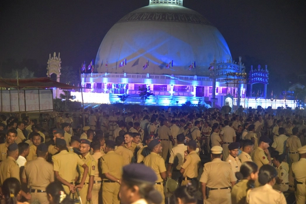
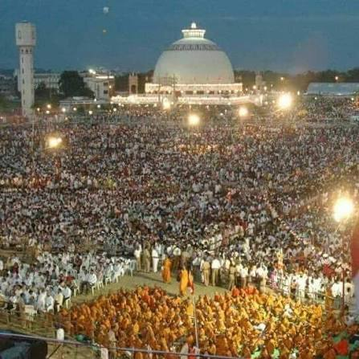
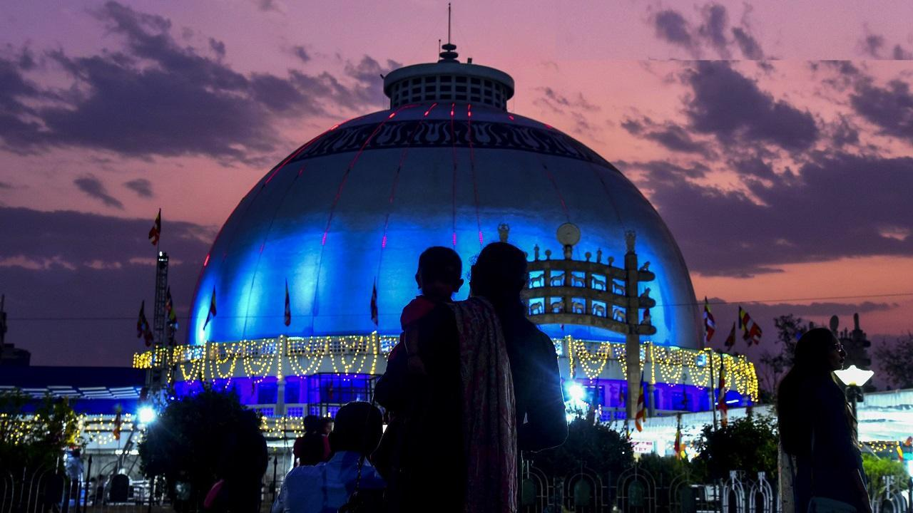
Deekshabhoomi is one of the most important Buddhist pilgrimage and historical sites in Nagpur, Maharashtra. It is especially significant in the history of Dr. B. R. Ambedkar and the Navayana Buddhist movement.
The Historic Event:Dr. Babasaheb Ambedkar and his wife converted to Buddhism here along with hundreds of thousands of followers, sparking the Neo-Buddhist movement in India.
The Stupa:Inspired by the famous Sanchi Stupa, the modern granite and marble structure was completed and inaugurated on December 18, 2001. It is one of the largest hollow Buddhist stupas in the world.
Major Festival: Millions of pilgrims gather here every year on Dhamma Chakra Pravartan Din (and October 14) to celebrate the mass conversion anniversary.
Address: Deeksha Bhoomi Nagpur is located on S Ambazari Rd, Abhyankar Nagar, Nagpur, Maharashtra 440020.
Timings: Open every day from 07:00 AM to 08:00 PM.
Entry Fee:Free for all visitors





